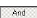
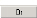

To create a complex metric query
1 Use the Filter Wizard, Filter Setup dialog box to select your initial criteria using the Attributes, Operations, and Arguments drop-down selectors (as in steps 1 to 8 of the basic filter procedure in the previous book).
2 Click the desired Boolean operator button (  ,  ) in the Use ... to merge with result section.
3 To add another metric filter criterion, repeat step 1.
4 Highlight and copy the completed Access expression in the Results shown as Access expression field.
5 Click the Saved Filters tab.
6 Paste the expression into the Filter Command field. Alternatively, you can directly type an Access expression into the Filter Command field if you know Access.
7 Type a name for your complex filter in the Filter Name field.
8 Click Add.
9 Click Apply.
Once you apply this filter, the filter remains in effect until you reset it (or quit DIScover).